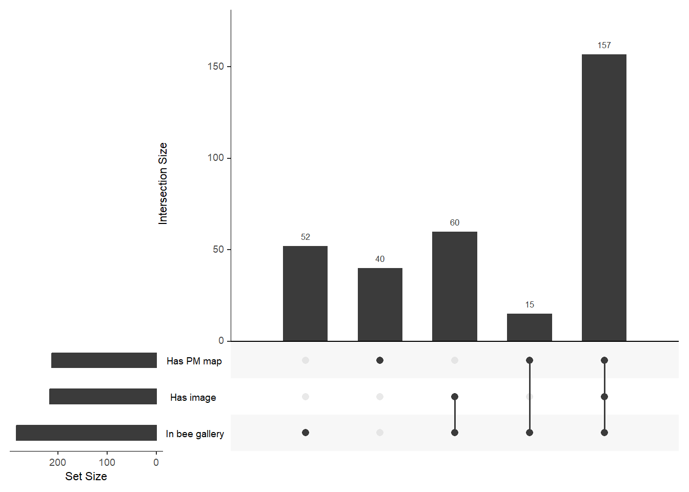
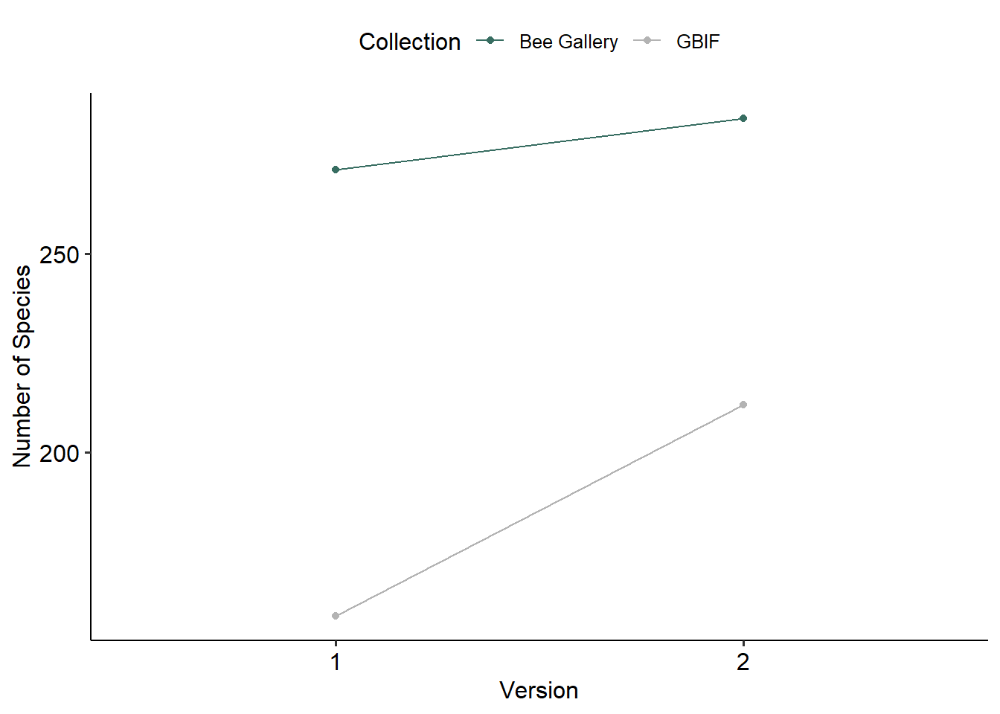
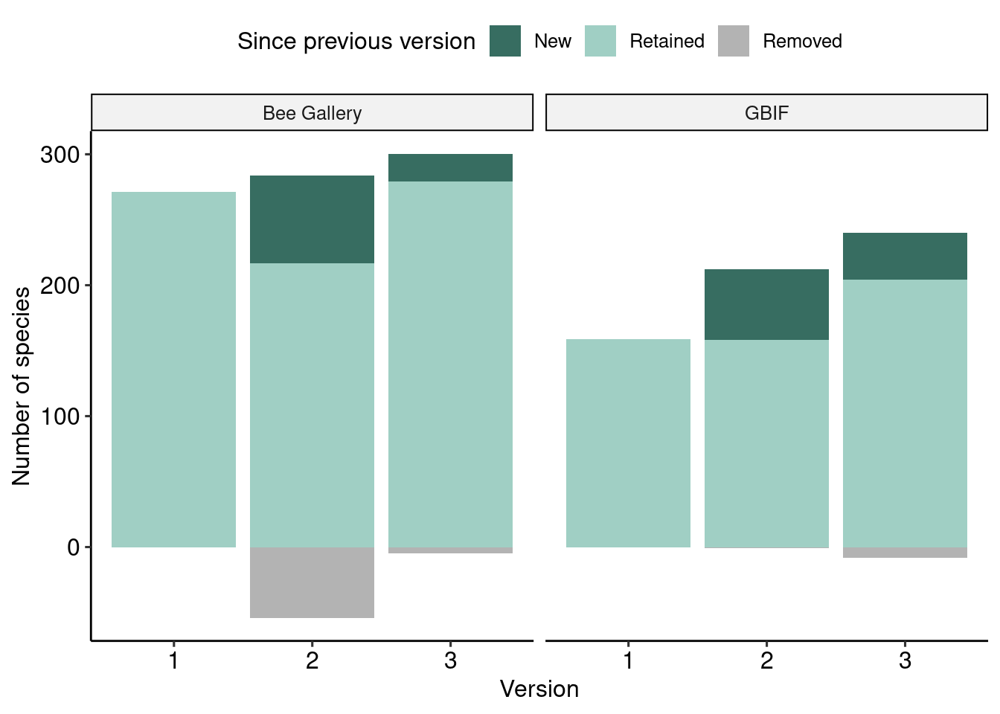
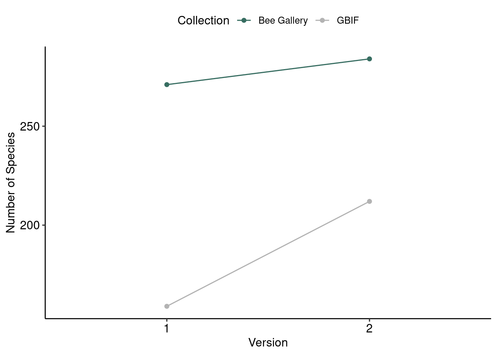
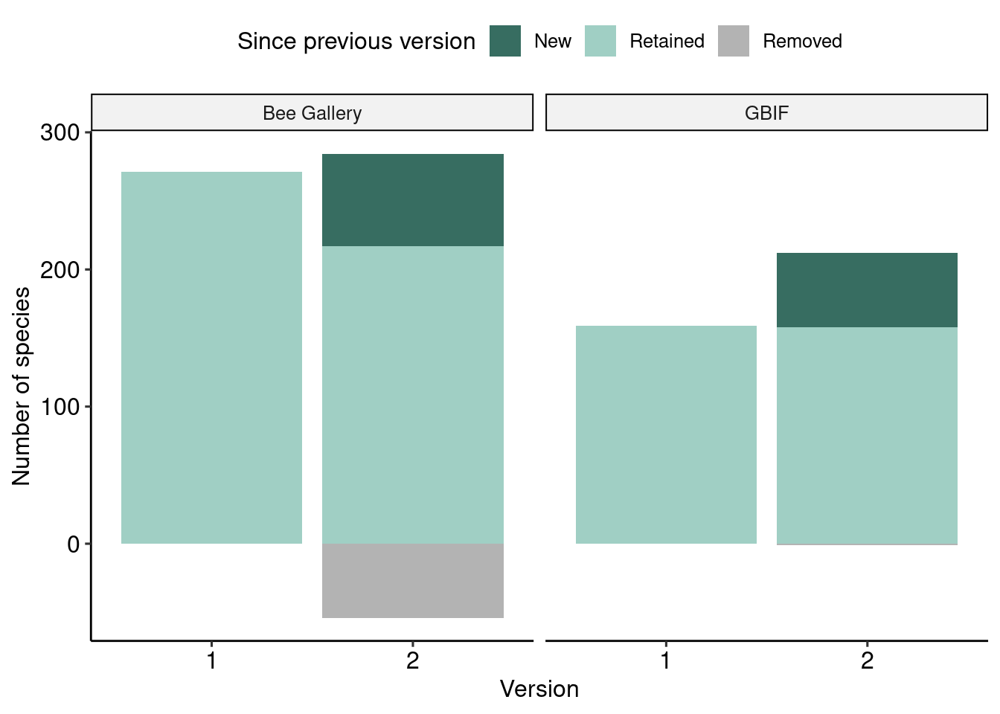
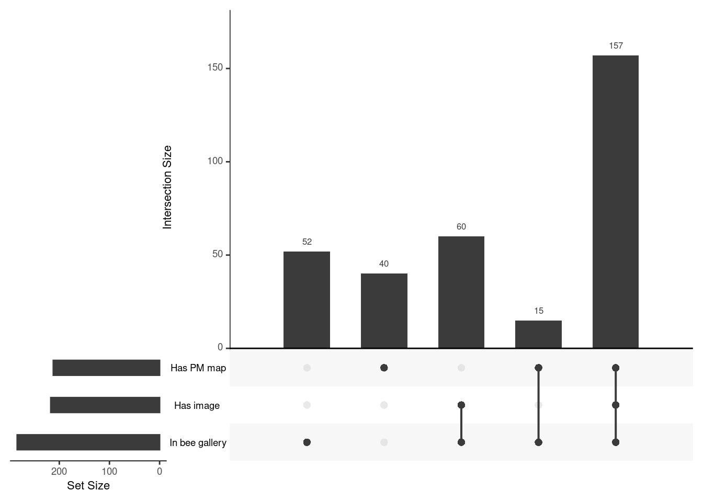
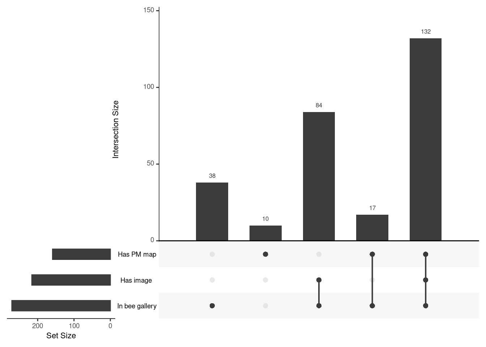

News
3rd Edition (December 2025)
More new bees for 2025! 🐝
- Bee book has been used for the City of North Vancouver annual report by the Native Bee Society of BC
- Our melittologist friends are using the Bee Book to decide where to look for bees to document
- We used the Bee Book to prepare the Bee Atlas annual summary
- New updates to introduction and general info on the Bee Book site
- 3rd edition data release


Resources
Data Completeness
Bee book gallery shows two pieces of information per species page:
- Bee image (curated by KQ)
- Map of observations in Pacific Maritime (pulled from GBIF)
Page completeness is as follows:
2nd Edition (September 2024)
New bees added!
- Bee pages feature a summary note of historical records curated from literature (see references page)
- News page added
- References page added
- Bee badges updated to locations of interest


Resources
Data Completeness
Bee book gallery shows two pieces of information per species page:
- Bee image (curated by KQ)
- Map of observations in Pacific Maritime (pulled from GBIF)
Page completeness is as follows:

1st Edition release (December 2023)
First published version of the bee book!
Data Completeness
Bee book gallery shows two pieces of information per species page:
- Bee image (curated by KQ)
- Map of observations in Pacific Maritime (pulled from GBIF)
Page completeness is as follows:

Last updated: 2026-01-02 22:17:19.957019